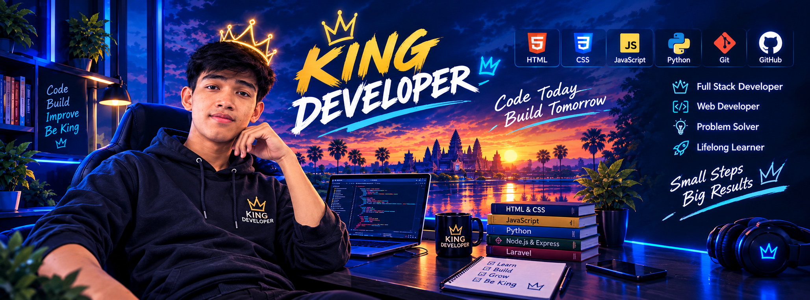

# Hi, I'm KHON Menghong 👋
### **Web Developer | Aspiring Full-Stack Developer** based in Cambodia 🇰🇭

---
## 🚀 About Me
I am a dedicated web development student based in Cambodia with a strong passion for building clean, responsive, and user-friendly web applications.
* 💻 **Current Focus:** Strengthening my foundation in HTML, CSS, JavaScript, Git, and GitHub while building real-world projects.
* 🤝 **Collaboration:** Experienced in working with peer teams on collaborative student projects and managing code workflows.
* 🎯 **Career Goal:** Evolving into a professional Full-Stack Web Developer by continuously learning modern frameworks, backend architectures, and database management.
---
## 🛠️ Technology Stack
### **Core Skills**

### **Learning & Future Goals**

---
## 📁 Featured Projects
| Project Name & Link | Description | Key Technologies |
| :--- | :--- | :--- |
| **[Personal Portfolio](https://menghong-dev-gc8q.vercel.app/)** | A modern, responsive developer portfolio showcasing my projects, background, and skills. | HTML, CSS, JavaScript, Vercel |
| **[CodFlow Programming](https://codflow-programming.vercel.app/)** | An educational web platform designed to help beginner IT students learn core programming concepts. | HTML, CSS, JavaScript |
| **[Ink & Pages](https://board-team.github.io/Team_bord-G4/)** | A responsive e-commerce web platform for books, stationery, and educational materials built collaboratively. | HTML, CSS, JavaScript, GitHub Pages |
---
## 📊 GitHub Statistics


---
## 🌐 Connect With Me


---
## 💡 Developer Mindset
> *"Code • Learn • Improve"*
> Building software is an ongoing journey of curiosity, problem-solving, and dedication to crafting meaningful digital experiences.